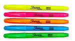
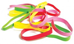
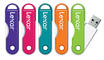

Sharpie brand highlighters in a variety of colors and Sizes. Perfect for marking memorable spots in Mr. Thompson’s note handouts.

A variety of sizes and colors. These bands are perfect for pony tails and 5th period study hall rubber band fights.

16G Lexar jump drives in a variety of colors. Supplies are limited – get them before they are gone.
Did your pencil break? Are you out of paper? Visit our friendly in-school store for all of your school supply needs. We have many quality items at reasonable prices.
Our guarantee: at The Ruler, we're committed to providing you, our guest, with an exceptional experience every time you visit. Whether you are purchasing last-minute emergency items or just stopping by to browse, we shall never deny a guest even the most ridiculous request.
The Ruler needs your support! We are a non-profit organization that counts on your business to remain open. All of our products are from local merchants who give us the best possible deals.
We are located conveniently next to the biology lab. Check out our detailed information for store hours.
It was a blustery, Winter morning in 1682. Mr. Thompson was a mere boy of 13 back then. When he got to school he remembered he had used the family's only pencil as a splint to fix his mother's broken leg. Rather than fail his math quiz Mr. Thompson used his pocket knife to carve a pencil from a fallen tree limb he found behind the schoolhouse.
That night he carved 100 more pencils. And he made several packs of paper from dried sage grass. The very next day the Rusty Ruler opened for business, and it has been helping distraught students ever since.
Jan Martin from 5th Period Algebra says This store saved my life!
Tom Rogers exclaims Fast and friendly service!
Mrs. Davidson says
All of my top papers have been written on Rusty Ruler paper. And I honestly believe words flow more smoothly from a Rusty Ruler ballpoint pen.